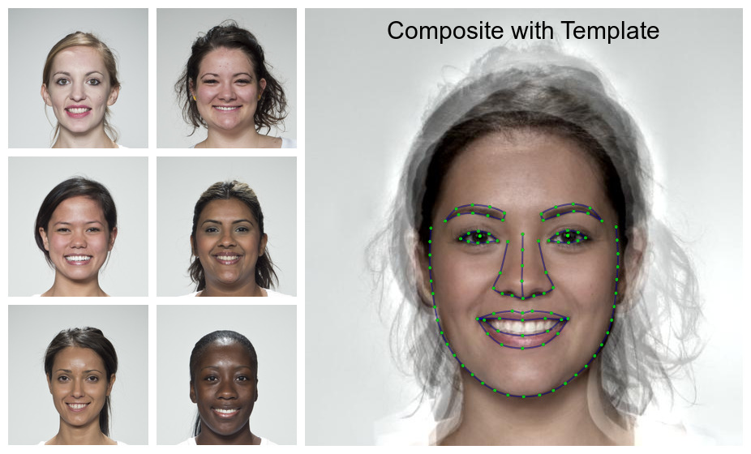

The goal of webmorphR is to make the construction of image stimuli more reproducible, with a focus on face stimuli. While face stimuli used in research can often not be shared for ethical reasons, webmorphR allows you to share recipes for creating stimuli with code, increasing reproducibility and encouraging generalisability to new faces.
This development of this package was funded by ERC grant #647910 (KINSHIP).
Installation
You can (hopefully soon) install webmorphR from CRAN with:
install_packages("webmorphR")You can install the development version from GitHub with:
# install.packages("devtools")
devtools::install_github("debruine/webmorphR")Use
The code below produces the following figure reproducibly, and can be applied to any set of original images.

Load images with psychomorph/webmorph templates or automatically delineate them. Use functions like resize(), align() and crop() to process the images reproducibly. Use webmorph functions to create composite or transformed faces. Use the plotting and labelling functions to create figures.
library(webmorphR)
# load 6 images from the smiling demo set
original <- demo_stim(dir = "smiling",
pattern = "002|013|030|064|094|099")
# resize and delineate the images (using Face++)
# procrustes align and crop them to 80% size
processed <- original |>
resize(0.5) |>
auto_delin(smiling, model = "fpp106") |>
align(procrustes = TRUE) |>
crop(width = 0.8, height = 0.8, y_off = 0)
# rename and save individual images
processed |>
rename_stim(prefix = "aligned_") |>
write_stim(dir = "stimuli/smiling")
# average faces (using webmorph.org)
avg <- avg(processed)
# combine individual faces in a grid the same height as the average face
grid <- plot(processed,
ncol = 2,
external_pad = FALSE,
maxheight = height(avg))
# draw template on the average face and add a label
tem_viz <- avg |>
draw_tem() |>
label(text = "Composite with Template",
size = 30, location = "+0+10")
# combine the grid and tem_viz images and plot
c(grid, tem_viz) |>
plot(nrow = 1, maxwidth = 1500)Helper packages
There are also two helper packages that contain large demo stimulus files or functions that require python and dlib.
devtools::install_github("debruine/webmorphR.stim")
devtools::install_github("debruine/webmorphR.dlib")